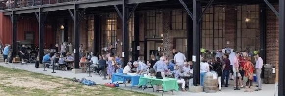

Party on the Patio - June 7th, 2025

Join us on June 7th for the “Party on the Patio" hosted by the Early Childhood of Cabarrus County Foundation! Enjoy great food, one alcoholic beverage, a DJ, and exciting silent auction items. All proceeds support underfunded preschools, bringing essential arts classes to preschool-aged children in our community. We are also seeking sponsors at various levels. Please reach out if you're interested in sponsoring this event in any way!